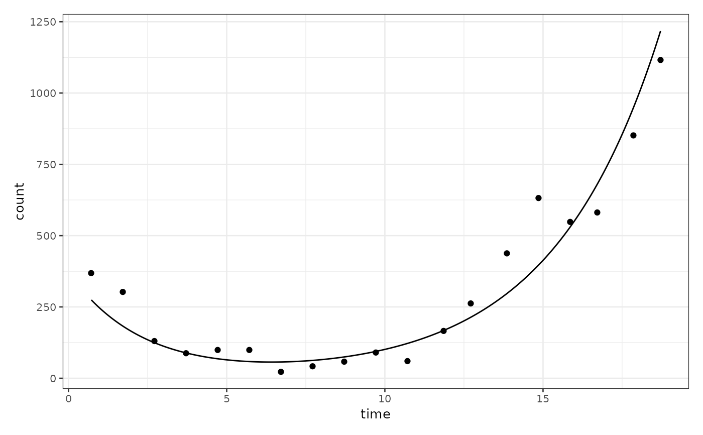

Fit a Two-Population Growth Model to a bipod Object
fit_two_pop_model.RdThis function fits a growth model that accounts for two interacting populations within a bipod object.
The model can be fitted using either Variational Inference or Markov Chain Monte Carlo (MCMC) sampling.
Usage
fit_two_pop_model(
x,
variational = FALSE,
factor_size = 1,
chains = 4,
iter = 5000,
cores = 4
)Arguments
- x
A
bipodobject containing population count data over time.- variational
Logical, indicating whether to use Variational Inference instead of MCMC sampling. If
TRUE, Variational Inference is applied; otherwise, MCMC sampling is used. Default isFALSE.- factor_size
Numeric, specifying the scaling factor for population counts in the
bipodobject. This value must be positive and appropriately chosen for the data. Default is1.- chains
Integer, defining the number of MCMC chains. This parameter is ignored if
variational = TRUE. Default is4.- iter
Integer, setting the number of iterations for MCMC sampling. This parameter is ignored if
variational = TRUE. Default is5000.- cores
Integer, specifying the number of CPU cores to use for parallel computation. Default is
4.
Value
The input bipod object with additional attributes:
two_pop_fit– The fitted two-population growth model.two_pop_fit_info– Metadata related to the fitting process, including:Sampling method (MCMC or Variational Inference)
Scaling factor used (
factor_size)Diagnostics of the model fitting process
two_pop_plots– A list of visualization plots, including:Evolutionary trend plots
Population growth rates
Key time estimates (e.g., emergence of resistant populations)
Examples
# Load a bipod object
data("xenografts", package = "biPOD")
mouse_id <- 543
d <- xenografts
d = dplyr::rename(d, count = tumour_volume)
d = dplyr::mutate(d, time = time / 7)
d = dplyr::filter(d, time >= 0)
d = dplyr::filter(d, mouse == mouse_id)
x <- biPOD::init(d, "543 U-shape")
#>
#> ── biPOD - bayesian inference for Population Dynamics ──────────────────────────
#>
#> ℹ Using sample named: 543 U-shape.
#> ! No group column present in input dataframe! A column will be added.
# Fit a two-population growth model using MCMC
x <- biPOD::fit_two_pop_model(x, variational = FALSE, factor_size = 1)
#> ℹ Fitting two population model using MCMC sampling ...
#>
#> Chain 4 Informational Message: The current Metropolis proposal is about to be rejected because of the following issue:
#> Chain 4 Exception: poisson_lpmf: Rate parameter[1] is -nan, but must be nonnegative! (in '/tmp/RtmpmcIZny/model-1fe53c32f022.stan', line 45, column 2 to column 18)
#> Chain 4 If this warning occurs sporadically, such as for highly constrained variable types like covariance matrices, then the sampler is fine,
#> Chain 4 but if this warning occurs often then your model may be either severely ill-conditioned or misspecified.
#> Chain 4
#> Chain 1 Informational Message: The current Metropolis proposal is about to be rejected because of the following issue:
#> Chain 1 Exception: poisson_lpmf: Rate parameter[1] is -nan, but must be nonnegative! (in '/tmp/RtmpmcIZny/model-1fe51dd37129.stan', line 44, column 2 to column 18)
#> Chain 1 If this warning occurs sporadically, such as for highly constrained variable types like covariance matrices, then the sampler is fine,
#> Chain 1 but if this warning occurs often then your model may be either severely ill-conditioned or misspecified.
#> Chain 1
#> Chain 1 Informational Message: The current Metropolis proposal is about to be rejected because of the following issue:
#> Chain 1 Exception: poisson_lpmf: Rate parameter[1] is -nan, but must be nonnegative! (in '/tmp/RtmpmcIZny/model-1fe51dd37129.stan', line 44, column 2 to column 18)
#> Chain 1 If this warning occurs sporadically, such as for highly constrained variable types like covariance matrices, then the sampler is fine,
#> Chain 1 but if this warning occurs often then your model may be either severely ill-conditioned or misspecified.
#> Chain 1
#> Chain 1 Informational Message: The current Metropolis proposal is about to be rejected because of the following issue:
#> Chain 1 Exception: poisson_lpmf: Rate parameter[1] is -nan, but must be nonnegative! (in '/tmp/RtmpmcIZny/model-1fe51dd37129.stan', line 44, column 2 to column 18)
#> Chain 1 If this warning occurs sporadically, such as for highly constrained variable types like covariance matrices, then the sampler is fine,
#> Chain 1 but if this warning occurs often then your model may be either severely ill-conditioned or misspecified.
#> Chain 1
#> Chain 1 Informational Message: The current Metropolis proposal is about to be rejected because of the following issue:
#> Chain 1 Exception: poisson_lpmf: Rate parameter[1] is -nan, but must be nonnegative! (in '/tmp/RtmpmcIZny/model-1fe51dd37129.stan', line 44, column 2 to column 18)
#> Chain 1 If this warning occurs sporadically, such as for highly constrained variable types like covariance matrices, then the sampler is fine,
#> Chain 1 but if this warning occurs often then your model may be either severely ill-conditioned or misspecified.
#> Chain 1
#> Chain 1 Informational Message: The current Metropolis proposal is about to be rejected because of the following issue:
#> Chain 1 Exception: poisson_lpmf: Rate parameter[1] is -nan, but must be nonnegative! (in '/tmp/RtmpmcIZny/model-1fe51dd37129.stan', line 44, column 2 to column 18)
#> Chain 1 If this warning occurs sporadically, such as for highly constrained variable types like covariance matrices, then the sampler is fine,
#> Chain 1 but if this warning occurs often then your model may be either severely ill-conditioned or misspecified.
#> Chain 1
#> Chain 2 Informational Message: The current Metropolis proposal is about to be rejected because of the following issue:
#> Chain 2 Exception: poisson_lpmf: Rate parameter[1] is -nan, but must be nonnegative! (in '/tmp/RtmpmcIZny/model-1fe51dd37129.stan', line 44, column 2 to column 18)
#> Chain 2 If this warning occurs sporadically, such as for highly constrained variable types like covariance matrices, then the sampler is fine,
#> Chain 2 but if this warning occurs often then your model may be either severely ill-conditioned or misspecified.
#> Chain 2
#> Chain 2 Informational Message: The current Metropolis proposal is about to be rejected because of the following issue:
#> Chain 2 Exception: poisson_lpmf: Rate parameter[1] is -nan, but must be nonnegative! (in '/tmp/RtmpmcIZny/model-1fe51dd37129.stan', line 44, column 2 to column 18)
#> Chain 2 If this warning occurs sporadically, such as for highly constrained variable types like covariance matrices, then the sampler is fine,
#> Chain 2 but if this warning occurs often then your model may be either severely ill-conditioned or misspecified.
#> Chain 2
#> Chain 2 Informational Message: The current Metropolis proposal is about to be rejected because of the following issue:
#> Chain 2 Exception: poisson_lpmf: Rate parameter[1] is -nan, but must be nonnegative! (in '/tmp/RtmpmcIZny/model-1fe51dd37129.stan', line 44, column 2 to column 18)
#> Chain 2 If this warning occurs sporadically, such as for highly constrained variable types like covariance matrices, then the sampler is fine,
#> Chain 2 but if this warning occurs often then your model may be either severely ill-conditioned or misspecified.
#> Chain 2
#> Chain 2 Informational Message: The current Metropolis proposal is about to be rejected because of the following issue:
#> Chain 2 Exception: poisson_lpmf: Rate parameter[1] is -nan, but must be nonnegative! (in '/tmp/RtmpmcIZny/model-1fe51dd37129.stan', line 44, column 2 to column 18)
#> Chain 2 If this warning occurs sporadically, such as for highly constrained variable types like covariance matrices, then the sampler is fine,
#> Chain 2 but if this warning occurs often then your model may be either severely ill-conditioned or misspecified.
#> Chain 2
#> Chain 2 Informational Message: The current Metropolis proposal is about to be rejected because of the following issue:
#> Chain 2 Exception: poisson_lpmf: Rate parameter[1] is -nan, but must be nonnegative! (in '/tmp/RtmpmcIZny/model-1fe51dd37129.stan', line 44, column 2 to column 18)
#> Chain 2 If this warning occurs sporadically, such as for highly constrained variable types like covariance matrices, then the sampler is fine,
#> Chain 2 but if this warning occurs often then your model may be either severely ill-conditioned or misspecified.
#> Chain 2
#> Warning: Some Pareto k diagnostic values are too high. See help('pareto-k-diagnostic') for details.
#> Warning: Some Pareto k diagnostic values are too high. See help('pareto-k-diagnostic') for details.
#> Warning: Some Pareto k diagnostic values are too high. See help('pareto-k-diagnostic') for details.
#> Warning: Dropping 'draws_df' class as required metadata was removed.
#> Warning: Dropping 'draws_df' class as required metadata was removed.
#> Warning: Dropping 'draws_df' class as required metadata was removed.
#> Warning: Dropping 'draws_df' class as required metadata was removed.
#> Warning: Dropping 'draws_df' class as required metadata was removed.
#> Warning: Dropping 'draws_df' class as required metadata was removed.
#> Warning: Dropping 'draws_df' class as required metadata was removed.
biPOD::plot_two_pop_fit(
x,
split_process = FALSE,
f_posteriors = FALSE,
t_posteriors = FALSE,
r_posteriors = FALSE
)
